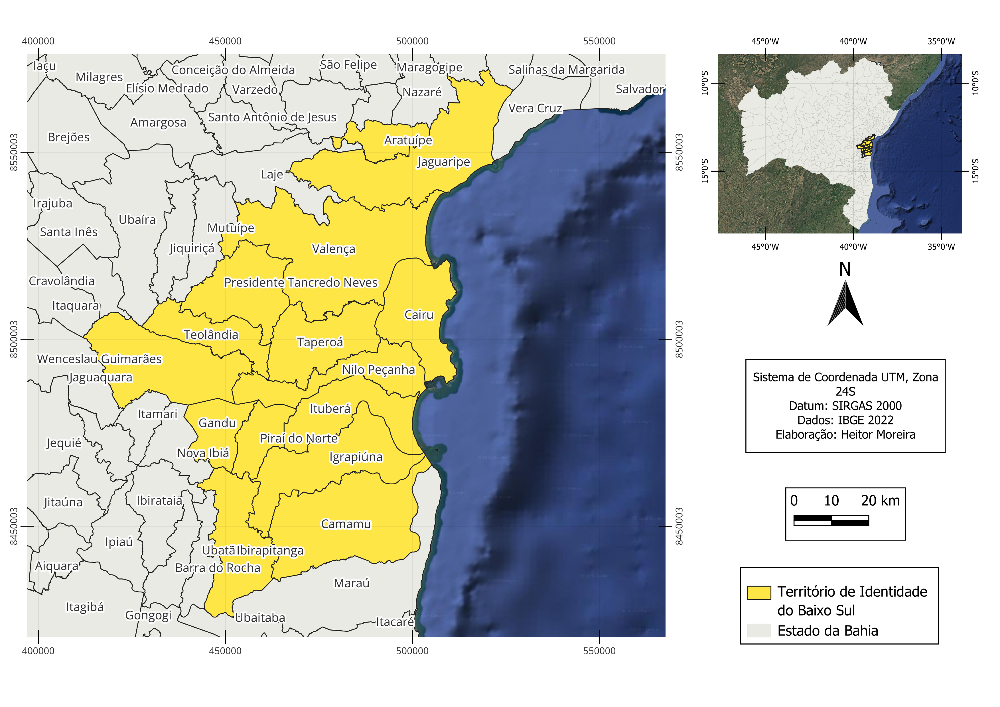
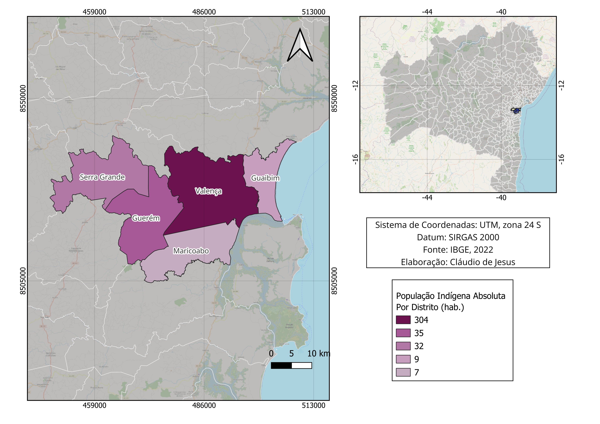
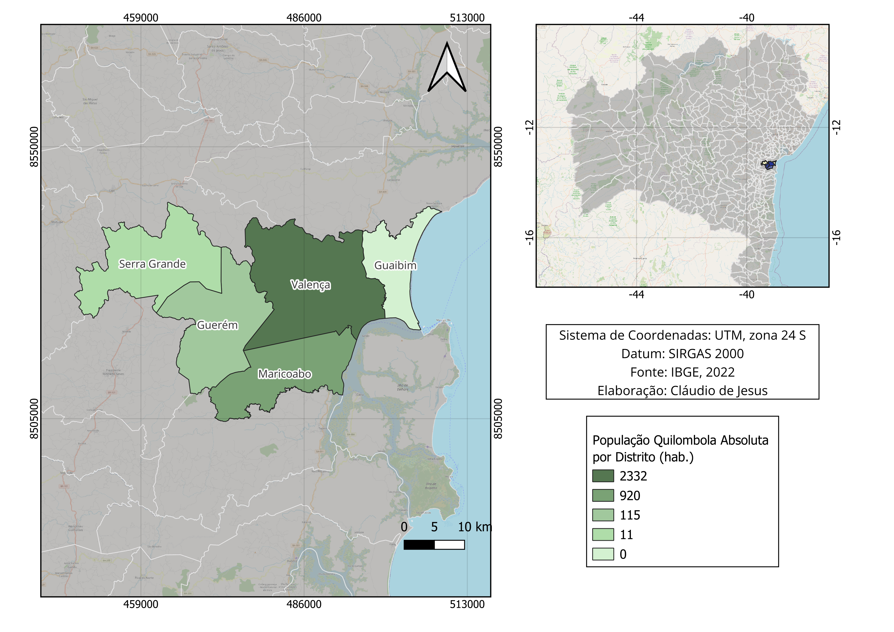
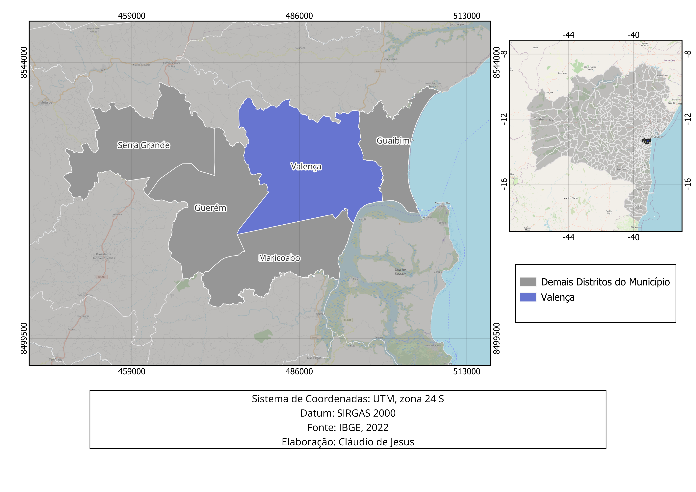
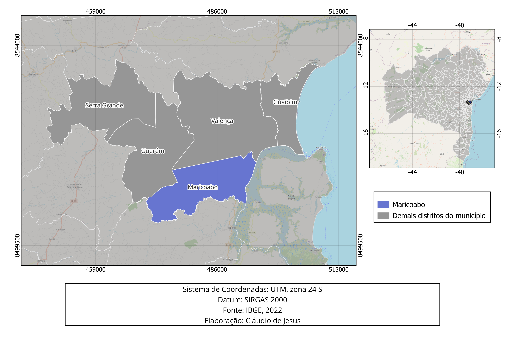
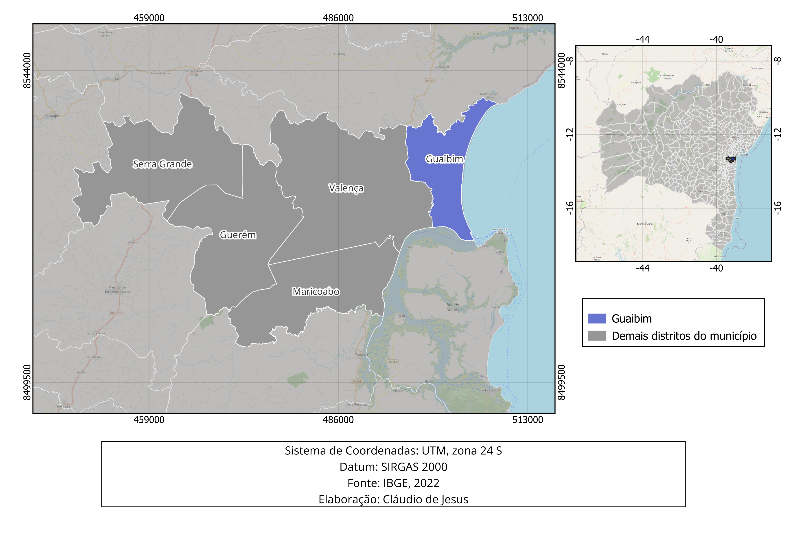
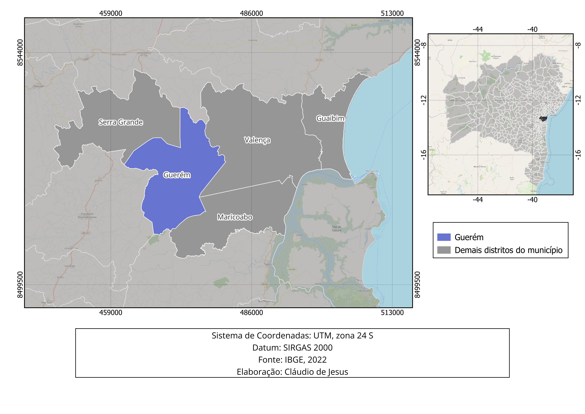
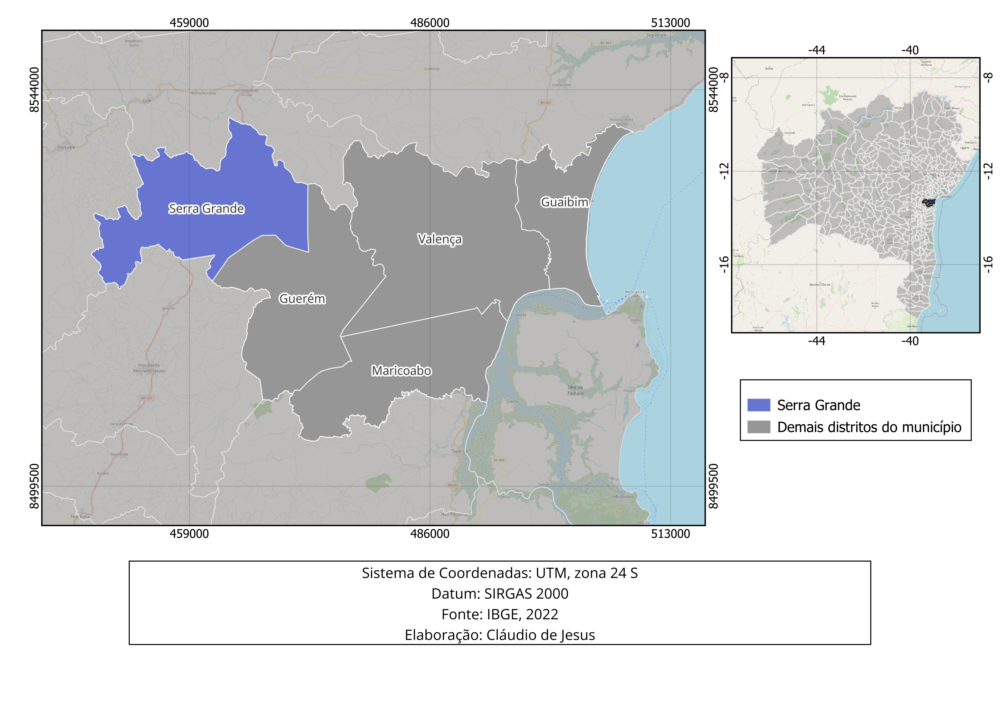

CARTOGRAFIA DO TERRITÓRIO DE IDENTIDADE DO BAIXO SUL DA BAHIA
Informações acerca do município de Valença
O município de Valença, localizado no Território do Baixo Sul, segundo a Lei Municipal nº 1.903, de 18 de setembro de 2007, é composto pelos seguintes distritos: Guaibim, Jiquiriçá, Guerém, Maricoabo, Serra Grande e Orobó. Contudo, a delimitação administrativa apresentada por essa lei não é a mesma utilizada pelo IBGE (2022), visto que o IBGE não estabelece critérios próprios na definição dos distritos, mas cadastra e representa apenas as subdivisões oficiais, sendo estas informadas pelos municípios. Dessa forma, caso não haja atualização dos dados pela administração pública, as nomenclaturas de algumas áreas que o município reconhece como distritos podem aparecer de forma diferente nas informações estatísticas do IBGE. Assim, para o censo 2022, o IBGE provavelmente utilizou a delimitação distrital contida na Lei Municipal n° 1.343, de 23 de novembro de 1993, cujos distritos eram Valença, Guaibim, Guerém, Maricoabo e Serra Grande.
Fontes
- VALENÇA (BA). Lei Municipal n.º 1.903, de 18 de setembro de 2007. Atualiza a Lei Municipal n.º 1.343, de 23 de novembro de 1993, que estabelece os limites da zona urbana e distritos do Município de Valença, e cria e delimita os distritos de Jiquiriçá e Orobó. Disponível em:https://www.valenca.ba.leg.br/leis/legislacao-municipal/leis-de-2007/lei-1-903-2007-limites-das-zonas-urbanas-e-distritos.pdf?. Acesso em: 20 nov. 2025.
- BAHIA. Secretaria do Planejamento (SEPLAN). Plano Territorial de Desenvolvimento do Baixo Sul. Salvador, 2017. Disponível em: https://www.ba.gov.br/seplan/sites/site-seplan/files/2025-07/Plano%20Territorial%20de%20Desenvolvimento%20do%20Baixo%20Sul.pdf. Acesso em: 13 nov. 2025
- SOUZA, Jurema Machado de Andrade; CARVALHO, Maria Rosário Carvalho. Pataxó Hã-Hã-Hãe. Instituto Socioambiental. 2021 Disponível em: https://pib.socioambiental.org/pt/Povo:Pataxó_Hã-Hã-Hãe#:~:text=Em%20sua%20totalidade%2C%20os%20índios,permanecendo%20a%20Reserva%20sub-judice. Acesso: 27. Outubro, 2025
- IBGE – Censo Demográfico 2022.
- Prefeitura Municipal de Valença. Dados Municipais. https://www.valenca.ba.gov.br/Site/dadosmunicipais
- IBGE – Censo Demográfico 2022.
- Prefeitura Municipal de Valença. Dados Municipais. https://www.valenca.ba.gov.br/Site/dadosmunicipais
- IBGE – Censo Demográfico 2022.
- Prefeitura Municipal de Valença. Dados Municipais. https://www.valenca.ba.gov.br/Site/dadosmunicipais
- IBGE – Censo Demográfico 2022.
- Prefeitura Municipal de Valença. Dados Municipais. https://www.valenca.ba.gov.br/Site/dadosmunicipais
- IBGE – Censo Demográfico 2022.
- Prefeitura Municipal de Valença. Dados Municipais. https://www.valenca.ba.gov.br/Site/dadosmunicipais
- IBGE – Censo Demográfico 2022.
Caracterização do território
A Bahia tem 27 Territórios de Identidade. Dentre eles detaca-se o Baixo Sul, marcado pela rica diversidade cultural, belezas naturais e forte presença de comunidades tradicionais, indígenas e quilombolas, com destaque, segundo Souza e Carvalho (2021), para o grupo Pataxó Hã-Hã-Hãe, o qual inclui etnias como Baenã, Pataxó Hã-Hã-Hãe, Kamakã, Tupinambá, Kariri-Sapuyá e Gueren. O Território do Baixo Sul é composto por quinze municípios, sendo: Aratuípe, Cairu, Camamu, Gandu, Ibirapitanga, Igrapiúna, Ituberá, Jaguaripe, Nilo Peçanha, Piraí do Norte, Presidente Tancredo Neves, Taperoá, Teolândia, Valença e Wenceslau Guimarães. Segundo a Secretaria de Planejamento - SEPLAN (2017), a diversidade cultural, econômica e dos aspectos naturais fez com que, em 2003, o Ministério do Desenvolvimento Agrário - MDA, realizasse o planejamentos para o desenvolvimento rural dos estados brasileiros, visando a superação das desigualdades sociais regionais. Esse processo visava a territorialização das regiões por meio de alguns critérios socioeconômicos, associado aos aspectos do sentimento de pertencimento da população local, ou seja, sua identidade territorial. Com isso, ocorreram mobilizações para a revelação dos territórios entre 2003 e 2006, sendo legitimados como unidade de planejamento e gestão de políticas públicas estaduais em 2007.
TERRITÓRIO DE IDENTIDADE DO BAIXO SUL DA BAHIA

Fontes
Distritos
Dados
Planilha com os dados territoriais utilizados para a elaboração dos mapas do Território do Baixo Sul da Bahia.
Baixar planilha (.xlsx)Link para download da plataforma utilizada para a elaboração dos mapas (QGIS 3.30.3).
https://www.qgis.org/download/Downloads
Distritos do município de Valença
A análise dos mapas dos distritos do município de Valença nos permite compreender a fundo a organização territorial e os dados demográficos e socioeconômicos disponibilizados pelo IBGE (Censo 2022).
Mapa 1. Localização distrital do município de Valença-BA

Divisão Político-Administrativa: O município é dividido em cinco distritos principais: a Sede (Valença), Guaibim, Guerém, Maricoabo e Serra Grande. Essa divisão facilita a gestão e a compreensão das diferentes realidades geográficas da região, que vão desde a zona costeira até o interior.
Mapa 2. População total por distritos do município de Valença-BA

População Absoluta: A distribuição populacional é altamente concentrada. O distrito da Sede (Valença) abriga a grande maioria dos habitantes (62.800), seguido por Serra Grande e Guerém. O distrito do Guaibim, apesar de seu forte apelo turístico, possui a menor população residente fixa.
Mapa 3. População Indígena por distritos do município de Valença-BA

População Indígena: A população indígena está concentrada no município de Valença, com destaque para o distrito de Guerém, que abriga a segunda maior parte dessa população, refletindo a presença histórica e cultural dos povos indígenas na região.
Mapa 4. População Quilombola por distritos do município de Valença-BA

População Quilombola: A presença de comunidades quilombolas é significativa, especialmente no distrito de Valença (sede), que abriga a maior parte dessa população, refletindo a importância histórica e cultural dessas comunidades na região.
Mapa 5. Porcentagem da população alfabetizada por distritos do município de Valença-BA

Taxa de Alfabetização Geral: Há uma variação importante na alfabetização de pessoas com 15 anos ou mais entre os distritos. O Guaibim e a Sede lideram com taxas na casa dos 88%, enquanto distritos mais rurais, como Guerém e Maricoabo, apresentam os menores índices, apontando a necessidade de maior atenção na educação básica nessas áreas.
Mapa 6. Rendimento nominal mensal médio dos indivíduos responsáveis pelos lares nos distritos do município de Valença-BA

Rendimento Nominal Médio: O reflexo econômico do turismo e da urbanização fica evidente neste mapa. O distrito do Guaibim destaca-se com o maior rendimento médio mensal (próximo a R$ 5.971,00 devido à especulação imobiliária e comércio hoteleiro), contrastando fortemente com o Maricoabo, que possui a menor média de rendimento entre os responsáveis por domicílios.
Mapa 7. Taxa de arborização nos distritos do município de Valença-BA
.png)
Arborização: A análise da infraestrutura verde urbana revela severas disparidades na qualidade socioambientais do entorno dos domicílios. O distrito de Guerém apresenta o cenário mais crítico, com 73,0% dos seus domicílios sem arborização nas vias públicas, seguido de perto pela Sede (Valença), que registra 66,2%. Em contrapartida, o distrito de Maricoabo é o que apresenta as melhores condições relativas de arborização, com apenas 31,3% de domicílios desprovidos de cobertura vegetal em seu entorno, enquanto o distrito de Serra Grande carece de dados amostrais para essa categoria, o que pode indicar uma menor densidade populacional ou uma distribuição espacial mais dispersa.
Mapa 8. Taxa de alfabetização da população indígena de 15 anos ou mais nos distritos do município de Valença-BA

Alfabetização indígena: A taxa de alfabetização entre a população indígena apresenta uma variação significativa entre os distritos. O distrito de Guerém lidera com o índice ideal de 100% de alfabetização indígena, seguido por Serra Grande com 95,65%, indicando o êxito ou maior cobertura local de ações educacionais. Os distritos de Guaibim e Sede (Valença) registram índices intermediários de 85,71% e 79,22%, respectivamente. Em contrapartida, o distrito de Maricoabo apresenta a menor taxa de alfabetização indígena, com 65,51%, o que aponta desafios específicos enfrentados por essa população no acesso à educação formal.
Mapa 9. Taxa de alfabetização da população quilombola de 15 anos ou mais nos distritos do município de Valença-BA

Alfabetização quilombola: A taxa de alfabetização entre a população quilombola também cumpre um papel fundamental na identificação de vulnerabilidades históricas das comunidades tradicionais de Valença. A espacialização desse indicador permite mapear o acesso à educação formal e o letramento dessas populações nas áreas rurais e periféricas, servindo como uma ferramenta estratégica para subsidiar políticas de igualdade racial e de valorização da educação do campo nos distritos afetados.
Mapa 10. Porcentagem de iluminação pública nos distritos do município de Valença-BA

Iluminação pública por distrito: A análise da infraestrutura urbana revela disparidades acentuadas de cobertura entre as regiões. O déficit desse serviço essencial manifesta-se de forma expressiva nas áreas rurais: o distrito de Mariocabo apresenta a maior porcentagem de domicílios sem iluminação pública no entorno, registrando 17,9%, seguido por Guerém com 7,77% de desabastecimento. Em contrapartida, a Sede (Valença) e o Guaibim contam com excelente infraestrutura consolidada, exibindo taxas residuais mínimas de falta de iluminação (1,36% e 1,96% respectivamente), enquanto o distrito de Serra Grande carece de dados declarados para esta variável.
Mapas do Território
Informações sobre Valença (Sede)
O distrito sede de Valença possui uma trajetória histórica que remonta ao período colonial, quando foi inicialmente criado como um território subordinado a Cairu, sob a denominação de Santíssimo Coração de Jesus de Valença. Sua elevação à categoria de vila ocorreu em 1799, vindo a tornar-se cidade oficialmente em 10 de novembro de 1849. A Sede é o centro da vida cultural e econômica, destacando-se pelo pioneirismo industrial ao inaugurar, em 1844, a Fábrica de Tecidos Todos os Santos, a primeira indústria da Bahia. O distrito preserva um rico patrimônio arquitetônico com sobrados dos séculos XVIII e XIX e é detentor de títulos honoríficos que exaltam sua bravura: "A Decidida", por sua participação na Guerra da Independência em 1823, e "A Hospitaleira", por ter acolhido sobreviventes de navios bombardeados na 2ª Guerra Mundial. Foi também na Sede que se instalou o primeiro banco de sangue da região, em 1942, no prédio do Sindicato dos Trabalhadores da Indústria de Fiação e Tecelagem. Religiosamente, o distrito é dedicado ao seu padroeiro, o Sagrado Coração de Jesus.

Fontes
Informações sobre Maricoabo
O distrito de Maricoabo foi integrado ao município de Valença em 27 de maio de 1882, através da lei provincial nº 2.288. Em seus registros históricos e legislativos, a localidade era anteriormente denominada São Félix de Maricoabo. Assim como Guerém, sua criação faz parte do processo de expansão territorial e administrativa ocorrido no final do século XIX, consolidando a organização das terras valencianas naquela época.

Fontes
Informações sobre Guaibim
Criado em 1999, o distrito de Guaibim é a unidade administrativa mais jovem do município, mas consolidou-se como o principal polo turístico da região. O distrito é famoso pela Praia de Guaibim, considerada uma das mais procuradas de todo o litoral baiano, caracterizando-se por ondas moderadas em mar aberto que atraem surfistas para campeonatos regionais anuais. Além do lazer à beira-mar, Guaibim é um ponto estratégico de acesso para o complexo turístico de Morro de São Paulo e Boipeba, oferecendo serviços de transporte por escunas pelo arquipélago. A natureza do distrito é marcada por um vasto patrimônio ambiental que inclui o Rio Una, extensos manguezais, reservas de Mata Atlântica e praias adjacentes mais desertas, como Ponta Grossa e Taquari.

Fontes
Informações sobre Guerém
O distrito de Guerém foi estabelecido em meados do século XIX, tendo sua criação oficializada pela lei provincial nº 300, em 23 de maio de 1848. Sua fundação ocorreu no contexto da transição administrativa de Valença, apenas um ano antes de o núcleo principal deixar de ser vila para se tornar cidade. Embora as fontes não detalhem aspectos econômicos atuais específicos para este distrito, ele representa uma das divisões territoriais históricas mais antigas que compõem a estrutura municipal.

Fontes
Informações sobre Serra Grande
Estabelecido no início do século XX, o distrito de Serra Grande foi oficialmente criado no ano de 1911. Ele integra a diversidade geográfica do município, que no total abriga uma população de mais de 97 mil habitantes e possui um clima predominantemente tropical úmido. Sua formação administrativa completa o quadro de distritos que, junto à Sede, Guerém, Maricoabo e Guaibim, formam a identidade do município de Valença.
